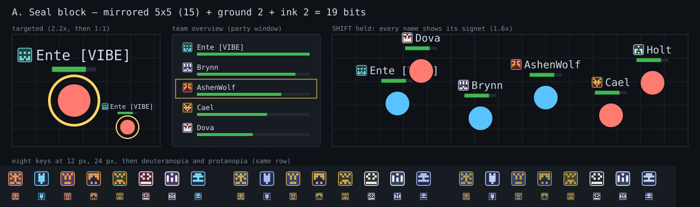
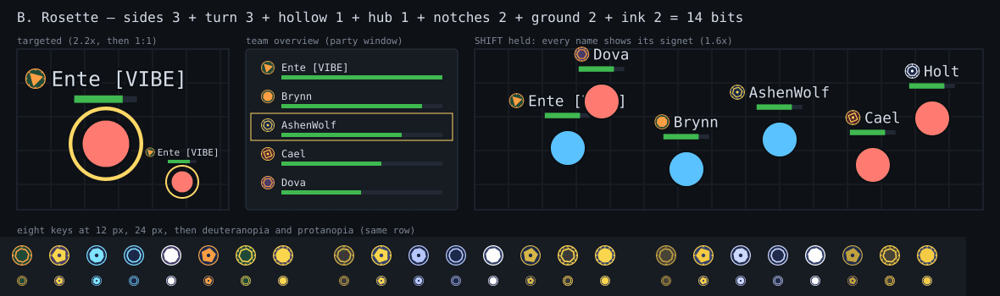
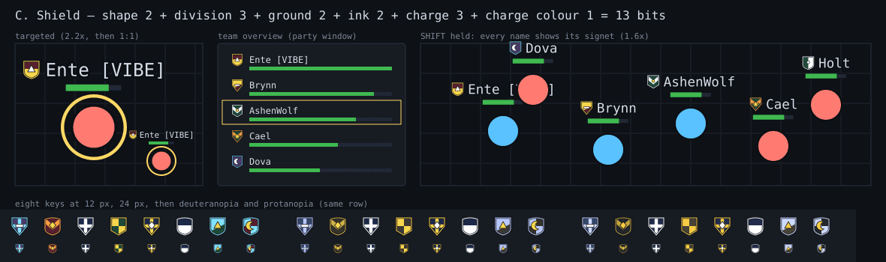

Study, not decided. Generated by scripts/assets/identity-signets.mjs. Each sheet shows the signet when targeted (name plate over the health bar, 2.2x and 1:1), in the party window, and with SHIFT held (every name in a clump), then eight different keys at 24 px and 12 px through normal, deuteranopia and protanopia. Every signet is a dark ground with a light charge, so it reads by lightness alone; the body, the glyph and the team colour are not touched. The name plate's 11 px line is the budget: the signet is 11 px there, 16 px in the party window.

A mirrored 5x5 pixel block on a dark rounded square (an identicon). 19 bits, the most distinct. At 11 px each cell is 2 px, so the block reads as a texture you can tell from a neighbour's but not describe; it comes alive at 16 px in the party window. Colour-blind: the block pattern and the ground/ink lightness carry it. Cost: up to 15 rects, one small sprite per key.

A ring with a polygon (3 to 10 sides, turned), solid or hollow, with or without a hub and with 0, 4, 8 or 12 notches. 14 bits. Rounder and calmer than A, and the polygon side count is the first thing you see even at 11 px; more alike across players than A or C (many keys give 6-sided solid ones). Colour-blind: shape carries it. Cost: one polygon, one ring.

A small heraldic shield: four outlines, eight divisions (plain, pale, fess, bend, chevron, cross, saltire, quarterly), a charge (dot, star, ring, bar, triangle, diamond, crescent) in white or yellow. 13 bits. Reads as "a coat of arms" at once, the most legible at 11 px thanks to its silhouette, and it suits a guild-themed game; the guild cape (#1406) already uses emblems, so a signet must not look like a guild emblem: this one sits on a shield, a cape's on cloth. Cost: a clip path and two or three shapes.
| Bits | At 11 px | At 16 px | Colour-blind | |
|---|---|---|---|---|
| A seal | 19 | texture | distinct | good |
| B rosette | 14 | shape clear, many alike | good | good |
| C shield | 13 | best silhouette | best | good |
Recommendation: C, with A's pattern bits as an inner field if more bits are needed. 13 of the 32 bits are used, so a second charge fits.